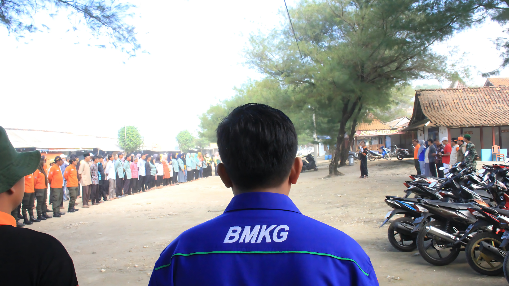

ꦱꦶꦒꦥ꧀ꦠꦱꦸꦤꦩꦶ
SIGAP TSUNAMI
Dashboard Informasi Tanggap Bencana Tsunami
Dashboard ini menyajikan informasi terkait bencana tsunami di Daerah Istimewa Yogyakarta. Berisi informasi umum terkait tsunami serta informasi lokasi dampak tsunami

ꦱꦶꦒꦥ꧀ꦠꦱꦸꦤꦩꦶ
SIGAP TSUNAMI
Sigap Melindungi Diri dan Lingkungan Sekitar
Menyajikan informasi dampak tsunami, skenario gelombang 3 dimensi, serta titik evakuasi tsunami

ꦱꦶꦒꦥ꧀ꦠꦱꦸꦤꦩꦶ
SIGAP TSUNAMI
Sigap Nglindhungi Diri saka Gelombang Segara Ageng
Mendukung program Tsunamy Ready Community serta dilengkapi dengan informasi kontak ke instansi terkait